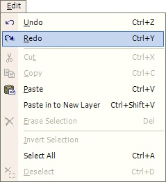

Redo Operation
|  The Redo Operation (Edit-->Redo) allows for redoing an action which was previously undone. The Redo Operation is also accessible from the History Window, where multiple Redo Operations can take place using a single click. |